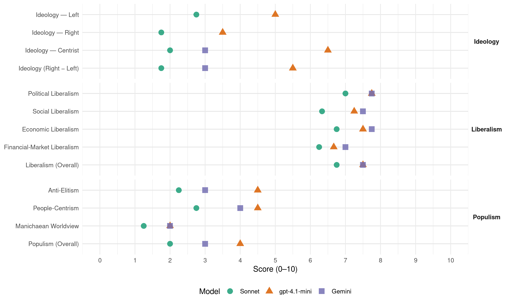

PUSC (Costa Rica, 2018)
manifesto_id 153521_201802
Get full text: This site shows derived annotations and short verbatim quotes only. The full manifesto text is © Manifesto Project / WZB — obtain it via manifesto-project.wzb.eu using the manifesto_id above.
Headline scores
| Dimension | Sonnet | gpt-4.1-mini | Gemini |
|---|---|---|---|
| Populism (Overall) | 2.0 | 4.0 | 3.0 |
| Anti-Elitism | 2.2 | 4.5 | 3.0 |
| People-Centrism | 2.8 | 4.5 | 4.0 |
| Manichaean Worldview | 1.2 | 2.0 | 2.0 |
| Ideology (Right − Left) | 1.8 | 5.5 | 3.0 |
| Liberalism (Overall) | 6.8 | 7.5 | 7.5 |
| Political Liberalism | 7.0 | 7.8 | 7.8 |
| Social Liberalism | 6.3 | 7.2 | 7.5 |
| Economic Liberalism | 6.8 | 7.5 | 7.8 |
| Financial-Market Liberalism | 6.2 | 6.7 | 7.0 |
Evidence per dimension
Economic Liberalism
Gemini · score 8.0 · verified · chunk 1
“mercado es la forma de organización”
sostenible y solidario, y que el “mercado es la forma de organización de la economía que corresponde
Gemini · score 8.0 · verified · chunk 2
“apertura comercial y de inversiones”
Sector Comercio Exterior La apertura comercial y de inversiones en las últimas tres décadas ha permitido una integración muy
Gemini · score 7.0 · verified · chunk 3
“eliminar duplicación y exceso de trámites haciendo cumplir”
cursos para fomentar las habilidades del emprendedor. Eliminar duplicación y exceso de trámites haciendo cumplir la Ley 8220. Crear la ventanilla única del
Gemini · score 8.0 · verified · chunk 4
“Generar competencia en el sector de distribución”
precios de los combustibles: Generar competencia en el sector de distribución de las estaciones de servicio
gpt-4.1-mini · score 8.0 · verified · chunk 1
“el mercado es la forma de organización de la economía”
En la Carta Social Cristiana a Costa Rica señalamos nuestra convicción de que la libertad es la condición esencial para el desarrollo económico sostenible y solidario, y que el “mercado es la forma de organización de la economía que corresponde a la democracia en libertad y al Estado Social de Derecho”.
gpt-4.1-mini · score 7.0 · verified · chunk 2
“promover la diversificación de los fondos de pensiones”
Promover la diversificación de los fondos de pensiones mediante una estrategia que permita invertir al menos un 20% de los recursos del IVM, del Fondo del Poder Judicial, del Magisterio Nacional y de las operadoras de pensiones en procesos de titularización y fideicomisos de desarrollo de obra pública.
gpt-4.1-mini · score 7.0 · verified · chunk 3
“Impulsar la creación de empleo decente, el emprendimiento, la creatividad y la innovación”
…Promover políticas que apoyen el desarrollo de actividades productivas, la creación de empleo decente, el emprendimiento, la creatividad y la innovación. Realizar ferias mensuales en espacios públicos para vender y mercadear exclusivamente productos nacionales…
gpt-4.1-mini · score 8.0 · verified · chunk 4
“inversión en infraestructura del país es el principal objetivo”
…Eliminar el rezago en el desarrollo de infraestructura del país es el principal objetivo. La infraestructura vial debe estar interconectada en forma de malla y ser consistente con el nivel de desarrollo económico del país. Debe procurar una mejora en la calidad de vida de los costarricenses y promover una reducción de costos de transporte al sector productivo.
Sonnet · score 7.0 · verified · chunk 1
“mercado es la forma de organización de la economía”
nuestra convicción de que la libertad es la condición esencial para el desarrollo económico sostenible y solidario, y que el ‘mercado es la forma de organización de la economía que corresponde a la democracia en libertad’
Sonnet · score 7.0 · verified · chunk 2
“apertura comercial y de inversiones en las últimas tres décadas”
La apertura comercial y de inversiones en las últimas tres décadas ha permitido una integración muy exitosa en la economía global y a su vez ha generado un aprovechamiento de oportunidades para la economía nacional
Sonnet · score 6.0 · verified · chunk 3
“Eliminar duplicación y exceso de trámites”
Eliminar duplicación y exceso de trámites haciendo cumplir la Ley 8220. Crear la ventanilla única del emprendedor.
Sonnet · score 7.0 · verified · chunk 4
“Reactivar concesiones como motor del desarrollo de alianzas público-privadas”
Reactivar concesiones como motor del desarrollo de alianzas público-privadas (APP). Entre las concesiones a realizar se incluye la autopista Garantías Sociales-Cartago y la ampliación a 4 carriles de toda la Ruta 27.
Financial-Market Liberalism
Gemini · score 8.0 · verified · chunk 1
“miembros de juntas directivas en el sector financiero”
asegurar la idoneidad de los miembros de juntas directivas en el sector financiero”, propuesto el año
Gemini · score 7.0 · verified · chunk 2
“diversificar inversiones de los fondos”
siguientes propuestas: 1. Diversificar inversiones de los fondos de pensiones: desarrollo de obra pública. En Costa
Gemini · score 6.0 · verified · chunk 3
“fortalecer el apoyo de la banca para el desarrollo”
como parte de un sistema de acompañamiento y financiamiento para emprendedores. Generar más fuentes de capital semilla y fortalecer el apoyo de la banca para el desarrollo al emprendimiento. Brindar respaldo con recursos de segundo
Gemini · score 7.0 · verified · chunk 4
“financiamiento de proyectos de eficiencia energética por parte de la banca”
También se impulsará el financiamiento de proyectos de eficiencia energética por parte de la banca, mediante créditos ambientales
gpt-4.1-mini · score 7.0 · verified · chunk 1
“Ley para asegurar la idoneidad de los miembros de juntas directivas en el sector financiero”
Promover el Expediente N° 20.542 “Ley para asegurar la idoneidad de los miembros de juntas directivas en el sector financiero”, propuesto el año anterior por la fracción legislativa de la Unidad Social Cristiana y que sería de suma importancia para evitar que se presenten hechos como los que han sacudido al país en los últimos meses por indebida gestión bancaria.
gpt-4.1-mini · score 7.0 · verified · chunk 2
“modernizar el sistema de información financiera de la Caja”
Modernizar el sistema de información financiera de la Caja (SIF) que posibilite una toma de decisiones oportuna y con información pertinente. Establecer mecanismos de control cruzado con otras instituciones del Estado para identificar posibles fuentes de evasión.
gpt-4.1-mini · score 6.0 · verified · chunk 3
“Crear la ventanilla única del emprendedor”
…Eliminar duplicación y exceso de trámites haciendo cumplir la Ley 8220. Crear la ventanilla única del emprendedor. Establecer un banco de proyectos formado por las iniciativas de Ferias Científicas en secundaria y trabajos universitarios, como parte de un sistema de acompañamiento y financiamiento para emprendedores…
Sonnet · score 7.0 · verified · chunk 1
“mayor flexibilidad del tipo de cambio”
Se propiciará una mayor flexibilidad del tipo de cambio y las reglas de intervención del Banco Central en el mercado cambiario serán más transparentes.
Sonnet · score 6.0 · verified · chunk 2
“instrumentos financieros para invertir estos fondos de pensiones”
una queja frecuente es que existen pocos instrumentos financieros para invertir estos fondos de pensiones y que las rentabilidades de estos fondos han caído en los últimos años
Sonnet · score 6.0 · verified · chunk 3
“Incentivar la constitución de fondos de inversión y de capital de riesgo”
Incentivar la constitución de fondos de inversión y de capital de riesgo para que apoyen económicamente a los emprendedores.
Sonnet · score 6.0 · verified · chunk 4
“financiamiento de proyectos de eficiencia energética por parte de la banca”
También se impulsará el financiamiento de proyectos de eficiencia energética por parte de la banca, mediante créditos ambientales existentes y de los organismos internacionales.
Political Liberalism
Gemini · score 8.0 · verified · chunk 1
“fortalecer la gobernabilidad democrática”
combatir el flagelo de la corrupción, fortalecer la gobernabilidad democrática y mejorar la eficiencia
Gemini · score 8.0 · verified · chunk 2
“educación integral comprometida con”
Fortalecer la educación y la democracia participativa. El país necesita una educación integral comprometida con una mejor distribución de la riqueza, inclusión, una sociedad
Gemini · score 8.0 · verified · chunk 3
“garantizando su participación política a todos los niveles”
transversal de la discapacidad a todos los niveles del quehacer humano, así como el derecho de esta población a ser titulares de sus asuntos, sean estos individuales o grupales, garantizando su participación política a todos los niveles.” “177. Nos comprometemos con el desarrollo
Gemini · score 7.0 · verified · chunk 4
“ejerciendo su autonomía, y el ente técnico”
coordinación de las municipalidades, ejerciendo su autonomía, y el ente técnico y rector en la materia
gpt-4.1-mini · score 8.0 · verified · chunk 1
“fortalecer la gobernabilidad democrática”
El Partido Unidad Social Cristiana tiene tres grandes prioridades en relación con el Estado costarricense: combatir el flagelo de la corrupción, fortalecer la gobernabilidad democrática y mejorar la eficiencia y eficacia de la acción gubernamental.
gpt-4.1-mini · score 8.0 · verified · chunk 2
“fortalecer la democracia participativa”
Fortalecer la educación y la democracia participativa. El país necesita una educación integral comprometida con una mejor distribución de la riqueza, inclusión, una sociedad amplia en oportunidades, pluralismo, respeto, libertad de conciencia, tolerancia, derecho a disentir, responsabilidad ética y trabajo, como medio para la promoción y el bienestar social.
gpt-4.1-mini · score 8.0 · verified · chunk 3
“promover la participación democrática”
…5. Esta misión solo puede ser cumplida fortaleciendo a participación de los ciudadanos desarrollando un nuevo estilo de ejercicio del poder, en el que tomen parte las organizaciones sociales y se respete la preeminencia de cada persona…
gpt-4.1-mini · score 7.0 · verified · chunk 4
“la democracia, derechos, elecciones, cortes, medios, gobierno, parlamento”
…un verbatim no encontrado, pero el texto menciona “la planificación del desarrollo del Sistema Energético Nacional (SIENA) deberá estar en manos de ese ente rector” y “promoveremos el Consejo Nacional del Sector Eléctrico” que garantice acceso a información y formación de políticas públicas, lo que implica respeto a instituciones democráticas y derechos políticos.
Sonnet · score 8.0 · verified · chunk 1
“fortalecer la gobernabilidad democrática”
El Partido Unidad Social Cristiana tiene tres grandes prioridades en relación con el Estado costarricense: combatir el flagelo de la corrupción, fortalecer la gobernabilidad democrática y mejorar la eficiencia
Sonnet · score 7.0 · verified · chunk 2
“democracia digital”
Programa ‘Costa Rica: democracia digital’, liderado por un Comisionado Nacional de Gobierno Digital en el Ministerio de Ciencia, Tecnología y Telecomunicaciones, cuyo objetivo será el cumplimiento de la agenda digital nacional
Sonnet · score 7.0 · verified · chunk 3
“garantizar su participación política a todos los niveles”
así como el derecho de esta población a ser titulares de sus asuntos, sean estos individuales o grupales, garantizando su participación política a todos los niveles
Sonnet · score 6.0 · verified · chunk 4
“autonomía, y el ente técnico y rector”
La adecuada planificación del territorio de un cantón debe ser un trabajo en coordinación de las municipalidades, ejerciendo su autonomía, y el ente técnico y rector en la materia, como es el INVU
Liberalism (Overall)
Gemini · score 8.0 · verified · chunk 1
“mercado es la forma de organización”
sostenible y solidario, y que el “mercado es la forma de organización de la economía que corresponde
Gemini · score 8.0 · verified · chunk 2
“apertura comercial y de inversiones”
Sector Comercio Exterior La apertura comercial y de inversiones en las últimas tres décadas ha permitido una integración muy
Gemini · score 7.0 · verified · chunk 3
“eliminar duplicación y exceso de trámites haciendo cumplir”
cursos para fomentar las habilidades del emprendedor. Eliminar duplicación y exceso de trámites haciendo cumplir la Ley 8220. Crear la ventanilla única del
Gemini · score 7.0 · verified · chunk 4
“Generar competencia en el sector de distribución”
precios de los combustibles: Generar competencia en el sector de distribución de las estaciones de servicio
gpt-4.1-mini · score 8.0 · verified · chunk 1
“fortalecer la gobernabilidad democrática”
El Partido Unidad Social Cristiana tiene tres grandes prioridades en relación con el Estado costarricense: combatir el flagelo de la corrupción, fortalecer la gobernabilidad democrática y mejorar la eficiencia y eficacia de la acción gubernamental.
gpt-4.1-mini · score 8.0 · verified · chunk 2
“fortalecer la democracia participativa”
Fortalecer la educación y la democracia participativa. El país necesita una educación integral comprometida con una mejor distribución de la riqueza, inclusión, una sociedad amplia en oportunidades, pluralismo, respeto, libertad de conciencia, tolerancia, derecho a disentir, responsabilidad ética y trabajo, como medio para la promoción y el bienestar social.
gpt-4.1-mini · score 7.0 · verified · chunk 3
“Promoveremos el manejo racional e integral de los recursos naturales”
…“289. En la dimensión ambiental del desarrollo sostenible reconocemos al ser humano como parte integral del ambiente y al ambiente como base de la vida y fundamento del desarrollo. Promoveremos el manejo racional e integral de los recursos naturales…
gpt-4.1-mini · score 7.0 · verified · chunk 4
“inversión en infraestructura del país es el principal objetivo”
…Eliminar el rezago en el desarrollo de infraestructura del país es el principal objetivo. La infraestructura vial debe estar interconectada en forma de malla y ser consistente con el nivel de desarrollo económico del país. Debe procurar una mejora en la calidad de vida de los costarricenses y promover una reducción de costos de transporte al sector productivo.
Sonnet · score 7.0 · verified · chunk 1
“libertad es la condición esencial para el desarrollo económico”
señalamos nuestra convicción de que la libertad es la condición esencial para el desarrollo económico sostenible y solidario, y que el ‘mercado es la forma de organización de la economía’
Sonnet · score 7.0 · verified · chunk 2
“apertura comercial y de inversiones en las últimas tres décadas”
La apertura comercial y de inversiones en las últimas tres décadas ha permitido una integración muy exitosa en la economía global y a su vez ha generado un aprovechamiento de oportunidades para la economía nacional
Sonnet · score 7.0 · verified · chunk 3
“igualdad de oportunidades y su libertad personal”
garantizar el respeto absoluto a los instrumentos jurídicos existentes que exigen el respeto a la dignidad humana de las personas con discapacidad, la igualdad de oportunidades y su libertad personal
Sonnet · score 6.0 · verified · chunk 4
“Reactivar concesiones como motor del desarrollo de alianzas público-privadas”
Reactivar concesiones como motor del desarrollo de alianzas público-privadas (APP). Entre las concesiones a realizar se incluye la autopista Garantías Sociales-Cartago y la ampliación a 4 carriles de toda la Ruta 27.
Anti-Elitism
Gemini · score 3.0 · verified · chunk 1
“evitar la impunidad”
todos los delitos relacionados con corrupción, para evitar la impunidad, y extender la autorización
gpt-4.1-mini · score 7.0 · verified · chunk 1
“combatir el flagelo de la corrupción”
El Partido Unidad Social Cristiana tiene tres grandes prioridades en relación con el Estado costarricense: combatir el flagelo de la corrupción, fortalecer la gobernabilidad democrática y mejorar la eficiencia y eficacia de la acción gubernamental.
gpt-4.1-mini · score 2.0 · verified · chunk 3
“Evitar la politización de los asuntos de la niñez y la adolescencia”
…las familias, otorgándoles las máximas penas posibles. Evitar la politización de los asuntos de la niñez y la adolescencia y las familias, con una integración de la Junta Directiva por parte de personas afines a la problemática del sector. 4. Rescate de valores esenciales…
Sonnet · score 3.0 · verified · chunk 1
“las últimas tres administraciones —dos del Partido Liberación Nacional y la actual del Partido Acción Ciudadana— no han ejecutado una política de gasto consistente”
El origen del déficit tiene diversas causas estructurales… también es cierto que las últimas tres administraciones —dos del Partido Liberación Nacional y la actual del Partido Acción Ciudadana— no han ejecutado una política de gasto consistente con la gravedad del problema.
Sonnet · score 2.0 · verified · chunk 2
“los beneficios del crecimiento económico que ha tenido el país no se han distribuido equitativamente”
hay una inaceptable dicotomía en nuestro desarrollo, porque los beneficios del crecimiento económico que ha tenido el país no se han distribuido equitativamente. Baste señalar que la desigualdad subió 10 puntos
Sonnet · score 2.0 · verified · chunk 3
“excesiva burocracia, los dos principales obstáculos”
Carencias en infraestructura constituyen, junto a la excesiva burocracia, los dos principales obstáculos para hacer negocios en Costa Rica
Sonnet · score 2.0 · verified · chunk 4
“germine la corrupción, no se realice un adecuado análisis”
no es aceptable que un proyecto dure años para obtener una viabilidad ambiental ni que existan miles de expedientes en la Setena sin resolver. Esto se presta para que germine la corrupción, no se realice un adecuado análisis de los casos y se fomente la informalidad
Ideology — Centrist
Gemini · score 3.0 · verified · chunk 1
“interés común de la población”
intereses particulares ajenos y hasta contrarios al interés común de la población. Sancionaremos severa
gpt-4.1-mini · score 7.0 · verified · chunk 1
“fortalecer la gobernabilidad democrática”
El Partido Unidad Social Cristiana tiene tres grandes prioridades en relación con el Estado costarricense: combatir el flagelo de la corrupción, fortalecer la gobernabilidad democrática y mejorar la eficiencia y eficacia de la acción gubernamental.
gpt-4.1-mini · score 6.0 · verified · chunk 3
“Nuestro partido, democrático y participativo, se rige por los principios de la igualdad, la libertad, la fraternidad”
…“6. Nuestro partido, democrático y participativo, se rige por los principios de la igualdad, la libertad, la fraternidad, la tolerancia, el pluralismo, la amplitud y el respeto a las opiniones, a los credos, a las culturas y a las ideas de todos y cada uno de los costarricenses…
Sonnet · score 2.0 · verified · chunk 1
“avanzando por el camino costarricense del diálogo”
Reafirmamos nuestra voluntad histórica de forjar un Estado democrático, transparente, eficiente y solidario, avanzando por el camino costarricense del diálogo y la negociación
Sonnet · score 2.0 · verified · chunk 2
“acuerdo nacional entre los actores públicos y privados”
Promover un acuerdo nacional entre los actores públicos y privados a fin de alcanzar que Costa Rica tenga una penetración de banda ancha
Sonnet · score 2.0 · verified · chunk 3
“alianza público-privada que fomente”
para desarrollar una alianza público-privada que fomente, como un eje transversal, la enseñanza y capacitación en los valores universales
Sonnet · score 2.0 · verified · chunk 4
“balance adecuado para que no haya insuficiencia”
Esto plantea el reto de lograr un balance adecuado para que no haya insuficiencia ni exceso en las normas y se contemplen las variables ambientales junto con las económicas, sociales y de calidad de vida.
Ideology — Left
gpt-4.1-mini · score 5.0 · verified · chunk 1
“compromiso con la economía social y ecológica de mercado”
El Estado debe mantener un compromiso con la economía social y ecológica de mercado como elemento central en la asignación de los recursos productivos, estabilidad macroeconómica y neutralidad como criterio central en su papel subsidiario.
gpt-4.1-mini · score 5.0 · verified · chunk 3
“Promoveremos el manejo racional e integral de los recursos naturales”
…“289. En la dimensión ambiental del desarrollo sostenible reconocemos al ser humano como parte integral del ambiente y al ambiente como base de la vida y fundamento del desarrollo. Promoveremos el manejo racional e integral de los recursos naturales, y la gestión integral del riesgo para reducir la vulnerabilidad a los desastres naturales…
Sonnet · score 2.0 · verified · chunk 1
“El empleo digno y el trabajo decente”
señalamos en el parágrafo 204 que: ‘El empleo digno y el trabajo decente, estable, y bien remunerado, que permita la interacción correcta y beneficiosa entre patrono y trabajador’
Sonnet · score 4.0 · verified · chunk 2
“disminuir la pobreza, las desigualdades y brechas sociales”
nuestro objetivo político es garantizar el acceso real de oportunidades para todos los actores sociales, teniendo como prioridad la cobertura de quienes están en desamparo económico y social, con el fin de disminuir la pobreza, las desigualdades y brechas sociales
Sonnet · score 3.0 · verified · chunk 3
“Otorgamiento de 20.000 pensiones del régimen no contributivo”
2. Otorgamiento de 20.000 pensiones del régimen no contributivo para adultos mayores en condición de pobreza.
Sonnet · score 2.0 · verified · chunk 4
“sectores sociales vulnerables, que podría recibir apoyo”
programas de reciclaje que además de su beneficio ambiental, representan una fuente potencial de creación de empleos para las Pymes o sectores sociales vulnerables, que podría recibir apoyo de la Banca de Desarrollo
Ideology (Right − Left)
Gemini · score 3.0 · verified · chunk 1
“interés común de la población”
intereses particulares ajenos y hasta contrarios al interés común de la población. Sancionaremos severa
gpt-4.1-mini · score 6.0 · verified · chunk 1
“fortalecer la gobernabilidad democrática”
El Partido Unidad Social Cristiana tiene tres grandes prioridades en relación con el Estado costarricense: combatir el flagelo de la corrupción, fortalecer la gobernabilidad democrática y mejorar la eficiencia y eficacia de la acción gubernamental.
gpt-4.1-mini · score 5.0 · verified · chunk 3
“Nuestro partido, democrático y participativo, se rige por los principios de la igualdad, la libertad, la fraternidad”
…“6. Nuestro partido, democrático y participativo, se rige por los principios de la igualdad, la libertad, la fraternidad, la tolerancia, el pluralismo, la amplitud y el respeto a las opiniones, a los credos, a las culturas y a las ideas de todos y cada uno de los costarricenses…
Sonnet · score 2.0 · verified · chunk 1
“humanismo cristiano y en los Objetivos del Desarrollo Sostenible”
sustentados hoy en la conjunción de los principios del humanismo cristiano y en los Objetivos del Desarrollo Sostenible, por el profundo compromiso que tenemos con las futuras generaciones
Sonnet · score 2.0 · verified · chunk 2
“disminuir la pobreza, las desigualdades y brechas sociales”
nuestro objetivo político es garantizar el acceso real de oportunidades para todos los actores sociales, teniendo como prioridad la cobertura de quienes están en desamparo económico y social, con el fin de disminuir la pobreza, las desigualdades y brechas sociales
Sonnet · score 2.0 · verified · chunk 3
“La juventud costarricense demanda, ante todo, oportunidades”
Juventud La juventud costarricense demanda, ante todo, oportunidades. Oportunidades educativas, oportunidades laborales
Sonnet · score 1.0 · verified · chunk 4
“sectores sociales vulnerables, que podría recibir apoyo”
programas de reciclaje que además de su beneficio ambiental, representan una fuente potencial de creación de empleos para las Pymes o sectores sociales vulnerables, que podría recibir apoyo de la Banca de Desarrollo
Ideology — Right
gpt-4.1-mini · score 4.0 · verified · chunk 1
“garantizando que los extranjeros que deseen permanecer y hacer un aporte positivo”
Proponemos la reformulación y ejecución de una política migratoria integral que convenga a los intereses del país, garantizando que los extranjeros que deseen permanecer y hacer un aporte positivo a nuestra sociedad cumplan con las normas legales que hemos fijado los costarricenses,
gpt-4.1-mini · score 3.0 · verified · chunk 3
“Consideramos prioritario resolver en definitiva el derecho de los indígenas a acceder a la propiedad de las tierras”
…“174. Consideramos prioritario resolver en definitiva el derecho de los indígenas a acceder a la propiedad de las tierras en las reservas, con el objeto de propiciar que los miembros de los pueblos indígenas tengan derecho de propiedad con las ventajas y responsabilidades que eso implica…
Sonnet · score 2.0 · verified · chunk 1
“migración segura y ordenada”
garantizando que los extranjeros que deseen permanecer y hacer un aporte positivo a nuestra sociedad cumplan con las normas legales… que haya un efectivo control migratorio… y que contemos con una migración segura y ordenada
Sonnet · score 2.0 · verified · chunk 2
“la vida humana es inviolable y debe ser protegida desde el momento de su concepción”
Declaramos nuestra convicción de que la vida humana es inviolable y debe ser protegida desde el momento de su concepción. La sociedad y el Estado comparten el deber de protección
Sonnet · score 2.0 · verified · chunk 3
“la familia es el fundamento y célula básica”
Dado que la familia es el fundamento y célula básica de la sociedad, con funciones insustituibles, es importante fortalecerla
Sonnet · score 1.0 · verified · chunk 4
“interés nacional de contar con esta fuente alternativa”
Por ello, daremos especial relevancia al interés nacional de contar con esta fuente alternativa de energía primaria, procurando la disponibilidad de recursos mediante acuerdos con otros países
Manichaean Worldview
Gemini · score 2.0 · verified · chunk 1
“combatir el flagelo de la corrupción”
prioridades en relación con el Estado costarricense: combatir el flagelo de la corrupción, fortalecer la
gpt-4.1-mini · score 5.0 · mixed · chunk 1
“Sancionaremos severa y efectivamente, los desvíos de poder”
Sancionaremos severa y efectivamente, los desvíos de poder, para satisfacer intereses particulares en perjuicio de la población.
gpt-4.1-mini · score 2.0 · verified · chunk 3
“Combatiremos todas aquellas formas de discriminación que atenten contra la dignidad humana”
…El Estado debe promover recursos, normas y políticas generales que faciliten la inclusión y el desarrollo de las personas con discapacidad… Combatiremos todas aquellas formas de discriminación que atenten contra la dignidad humana de las personas con discapacidad…
Sonnet · score 2.0 · verified · chunk 1
“gobiernos irresponsables con el gasto”
Una regla fiscal constitucional clara para impedir abusos de gobiernos irresponsables con el gasto. El Partido Unidad Social Cristiana presentó una propuesta de reforma constitucional
Sonnet · score 1.0 · verified · chunk 2
“la desigualdad subió 10 puntos en los 10 años posteriores”
Baste señalar que la desigualdad subió 10 puntos en los 10 años posteriores al último gobierno socialcristiano. Medida por el coeficiente de Gini, en 2006 la desigualdad era de 42,2 puntos
Sonnet · score 1.0 · verified · chunk 3
“Combatiremos todas aquellas formas de discriminación”
Combatiremos todas aquellas formas de discriminación que atenten contra la dignidad humana de las personas con discapacidad.
Sonnet · score 1.0 · verified · chunk 4
“no es aceptable que un proyecto dure años”
Llevar a cabo una modernización reglamentaria de forma y fondo, de manera que se aplique la evaluación ambiental de los proyectos rápida y eficientemente… no es aceptable que un proyecto dure años para obtener una viabilidad ambiental
People-Centrism
Gemini · score 4.0 · verified · chunk 1
“interés común de la población”
intereses particulares ajenos y hasta contrarios al interés común de la población. Sancionaremos severa
gpt-4.1-mini · score 6.0 · verified · chunk 1
“considerando la diversidad de necesidades e intereses de la ciudadanía costarricense”
avanzando por el camino costarricense del diálogo y la negociación, considerando la diversidad de necesidades e intereses de la ciudadanía costarricense.
gpt-4.1-mini · score 3.0 · verified · chunk 3
“la familia es el fundamento y célula básica de la sociedad”
…Rescate de valores esenciales. Dado que la familia es el fundamento y célula básica de la sociedad, con funciones insustituibles, es importante fortalecerla mediante el fomento de los valores universales y virtudes humanas, para contribuir con el crecimiento personal y social…
Sonnet · score 3.0 · verified · chunk 1
“la ciudadanía costarricense”
considerando la diversidad de necesidades e intereses de la ciudadanía costarricense. Para ello nos basamos en todo este Programa de Gobierno
Sonnet · score 3.0 · verified · chunk 2
“privilegiamos a la persona humana, con el fin de mejorar su capacidad”
En la dimensión social del desarrollo sostenible, privilegiamos a la persona humana, con el fin de mejorar su capacidad como actores, así como las de los grupos y organizaciones
Sonnet · score 3.0 · verified · chunk 3
“La juventud costarricense demanda, ante todo, oportunidades”
Juventud La juventud costarricense demanda, ante todo, oportunidades. Oportunidades educativas, oportunidades laborales
Sonnet · score 2.0 · verified · chunk 4
“mejora en la calidad de vida de los costarricenses”
La infraestructura vial debe estar interconectada en forma de malla y ser consistente con el nivel de desarrollo económico del país. Debe procurar una mejora en la calidad de vida de los costarricenses y promover una reducción de costos de transporte al sector productivo.
Populism (Overall)
Gemini · score 3.0 · verified · chunk 1
“combatir el flagelo de la corrupción”
prioridades en relación con el Estado costarricense: combatir el flagelo de la corrupción, fortalecer la
gpt-4.1-mini · score 6.0 · verified · chunk 1
“combatir el flagelo de la corrupción”
El Partido Unidad Social Cristiana tiene tres grandes prioridades en relación con el Estado costarricense: combatir el flagelo de la corrupción, fortalecer la gobernabilidad democrática y mejorar la eficiencia y eficacia de la acción gubernamental.
gpt-4.1-mini · score 2.0 · verified · chunk 3
“Evitar la politización de los asuntos de la niñez y la adolescencia”
…las familias, otorgándoles las máximas penas posibles. Evitar la politización de los asuntos de la niñez y la adolescencia y las familias, con una integración de la Junta Directiva por parte de personas afines a la problemática del sector…
Sonnet · score 2.0 · verified · chunk 1
“combatir el flagelo de la corrupción”
El Partido Unidad Social Cristiana tiene tres grandes prioridades en relación con el Estado costarricense: combatir el flagelo de la corrupción, fortalecer la gobernabilidad democrática
Sonnet · score 2.0 · verified · chunk 2
“inaceptable dicotomía en nuestro desarrollo”
hay una inaceptable dicotomía en nuestro desarrollo, porque los beneficios del crecimiento económico que ha tenido el país no se han distribuido equitativamente
Sonnet · score 2.0 · verified · chunk 3
“excesiva burocracia, los dos principales obstáculos”
Carencias en infraestructura constituyen, junto a la excesiva burocracia, los dos principales obstáculos para hacer negocios en Costa Rica
Sonnet · score 2.0 · verified · chunk 4
“germine la corrupción, no se realice un adecuado análisis”
Esto se presta para que germine la corrupción, no se realice un adecuado análisis de los casos y se fomente la informalidad con la consecuencia ambiental que ello conlleva.
Social Liberalism